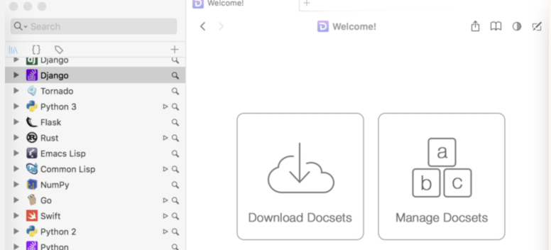
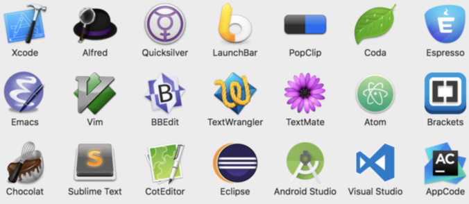
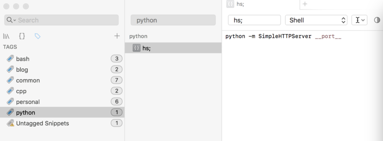
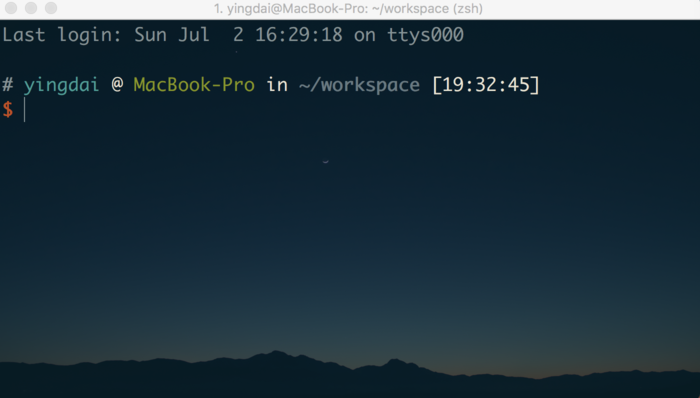
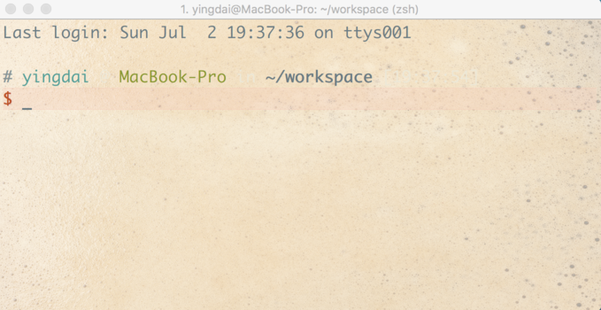
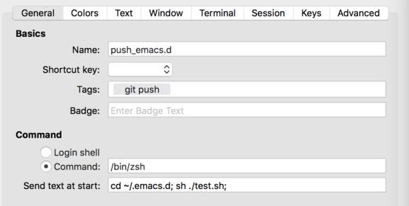
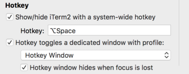
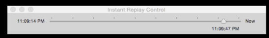
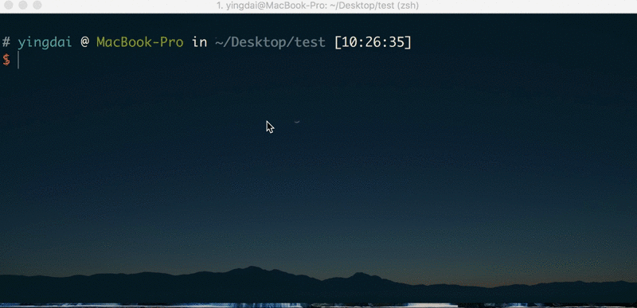
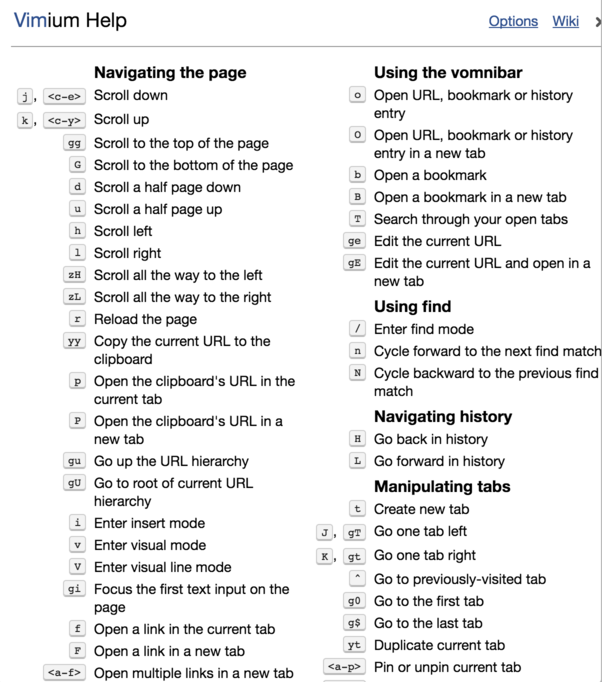

MAC 好用软件
Table of Contents
这个文章的目的是推荐一些自认为好用软件。好用的标准是什么？好用的标准有很多，我认为最重要的是能够用着舒服、简化操作而且能够高效的达到我们的目的。下面我就说一下我认为好的软件。
1. Emacs
为什么第一个推荐 Emacs 呢？即使你是 Vim 用户，学习 Emacs 对你使用 Mac 也很有用。 为什么这样说呢？我就说说移动的操作。我们都知道 Vim 移动使用的是 H J K L。 这是很快，但是这对你在 Mac 下没有任何的帮助，你依然要用到方向键，或者鼠标去做很多的操作。但是 Emacs 的方向移动却不是这样的，它与 Vim 是两个完全不一样的哲学。在 Emacs 中，我们使用 C-a, C-e, C-f, C-b, C-p, C-n 等，去做移动操作。你可以在 Mac 上随便一个文本编辑工具或者其他需要输入文字的地方去试一下这几个命令。熟悉了以后你会感到非常的方便，当然 Ctrl 键要大小写键换一下才好用。举个例子，在 Iterm 中我们输入命令，可以很方便的修改，还有写 Email 等等。 这还只是简单的移动其他还有很多。 每个人的 Emacs 都是不一样的，也有不同的按键和操作，如果你不想折腾，不建议学。
2. Dash
作为一个码农，查文档是必不可少的。如何能够快速的查到我们需要的东西，对我们来说很重要。Dash 就是这样一个工具，我们可以提前下载一些相关的文档。
这个软件如果单独使用并不能体现他的优势，因为这样与你在浏览器上搜索相比，
也不见得快多少。很牛的一点是它本身集成了很多的软件，例如 Emacs, Vim,
Eclipse, IDEA, Sublime 等等。我经常要使用 Emacs，在 Emacs 中有一个命令是
dash-at-point, 他会在 Dash 中查询光标所在单词相关的文档，非常方便，其他软件也类似。

下面是集成的软件，非常的多。

另外一个比较有用的地方是它的 Snippets 也很好用。我们可以将一些很常见的固定的模式，保存到 snippets 中。举一个简单的例子。例如我经常要用 python -m
SimpleHTTPServer 8000 去创建一个 http server，因为这个很固定，我其实就可以创建一个 snippet 来为这行代码创建一个简单的缩写，我用的是 hs; 。我所有的 snippets 的缩写我都是以 ; 结尾, 缩写越简单越好。

3. iTerm2
简单来说 iTerm2 是 macOS 下终端工具，相比于原生的更加好用。用的好的话， 可以极大的提高工作效率。下面我就说一下它的技巧。一是，为了自己查阅方便； 二是，希望对别人有些用。就我而言，iTerm2 的厉害之处在于它的 Profiles, 非常的强大，非常的有用，用起来非常的爽。
Profiles 选项卡设置
首先，要注意到我们可以添加很多个 Profile Name, 每个 Profile Name 可以设置不同的快捷键以及其他的自定义的配置，这个是很有用的。在 Colors 选项卡下有一个 Color Presets, 下拉可选择不同的主题，也可以从网上自行的下载。例如，我对不同的配置设置了不同的主题。晚上的切换到 Solarized Dark theme, 白天切换到 Solarized Light theme。而且在 window 选项卡下，我们可以设置 terminal 的背景。

这个是 Light 的主题加背景

再深入看看 Profiles
关于 Profiles 其实还有一个很重要的应用，我们可以让 profile 执行我们想要的命令。举一个很具体的例子。 我经常要更新我的 emacs 配置，但是如果我手动的去输入很多的命令就比较麻烦:
cd ~/.emacs.d git add . git commit -m "messages.." git push origin master
这些我都可以创建一个相关的 Profile 解决：

上面的 Command 的一栏，因为我用的 zsh，所以填的是 /bin/zsh，你也可以填 /bin/bash。 然后关键的是 Send text at start，这里填的才是我们将要执行的命令。 这里的 test.sh 如下：
git add . read -p "Commit description, default is 'Auto commit': " desc if [ -z "$desc" ]; then desc="Auto commit" fi git commit -m "$desc" git push origin master
做了上面的工作，我如果想要 push 我的 .emacs.d 就简单了，直接打开我上面设置的这个 profile 就可以了。其实你可以根据这种思想做很多有意思的事情。再举个例子，如果我有 6 个 server，需要 ssh 经常登录 ，我们就可以添加 6 profiles。然后给这 6 个 server 设置相同的 tag，然后在这个 tag 下会列出相关的 server name，而且还有个 open all。这个时候我们直接点击 open all，就可以一键链接这六个 server 了。更多的操作就靠我们发挥想象了。

更改 option 键
为什么要改这个呢？不知道你是否有对单词移动、删除这种操作有需求？如果有，那设置这个将会非常好用。 先说下更改后的效果：
| 快捷键 | 说明 |
|---|---|
| M-f | 向前移动单词 |
| M-b | 向后移动单词 |
| M-d | 向后删除单词 |
| M-delete | 向前删除单词 |
说明，这里的 M-f 是指按住 M 键再按 f。
首先找到 Profiles 下的 keys 选项卡，最下面有一个 keyboard behavior。
在 Left option key acts as 下，选择 +ESC 就可以了。
我们上面的 M 键就是现在的 option。
这里顺便列举一下，其他关于移动的快捷键：
| 快捷键 | 说明 |
| Ctrl-a | 移动到开头 |
| Ctrl-e | 移动到结尾 |
| Ctrl-f | 向前移动一个字母 |
| Ctrl-b | 向后移动一个字母 |
| Ctrl-k | 删除光标后的所有字符 |
| Ctrl-p | 上一条命名 |
| Ctrl-n | 下一条命令 |
如果你是 Emacs 用户的话，你会对这些命令感到很亲切，因为这些都是 Emacs 下的命令。
Broadcast 功能
我们可以使用这个功能来同步 tab, pane。 举个例子，我们要在登录几台 remote server。 我们就可以先输入：
ssh ubuntu@
然后在不同的 pane 中输入不同 server ip。
其他有用的快捷键
- 一键调出命令行
我们进入设置界面，进入 Keys 选项卡，找到 Hotkey 选项，选中如下的选项

选择你喜欢的快捷键，下次我们就可以直接用这个快捷键呼出一个半透明的 tab。你点击其他地方这个 tab 就会自动消失。同时我们在 Profiles 下会多出一个 Hotkey Window 的 Profile Name。
- 快照返回
按下 Cmd + Option + B 就会在界面上显示一个时间轴：

然后按方向键，我们就可以访问某个时间的操作了。
- 标签排列切换
按下 Cmd + Option + E 后，我们看到所有的标签都整齐的排列在屏幕上，并且屏幕左上角为我们展现了一个搜索框，输入我们想要查找的就可以了。
- 和 Pane 有关
命令 说明 Command + t 新建 tab Command + <number> 切换 tab Command + d 水平分割 Pane Command + Shift + d 垂直分割 Pane Command + [ or ] 顺序切换 Pane - 命令补全
命令 说明 Command + ; 弹出补全窗口 Command + Shift + H 弹出历史记录 - clear
Ctrl + l 的功能和执行 clear 命令的功能一样。
Cmd + k 清空 buffer
- 字体缩放
cmd + + 放大字体
cmd + - 缩小字体
4. QuickTime Player
这个是 mac 自带的软件。我主要用他来录制屏幕，然后转换为 gif。
- 首先打开它，点击菜单栏文件，找到 New Screen Recording，点击。
- 用鼠标选中一块要录制的区域，点击开始录制。
- 操作完成后保存。假设保存为 in.mov。
- 将 in.mov => out.gif
使用如下的命令
ffmpeg -i in.mov -s 600x400 -pix_fmt rgb24 -r 20 -f gif - | gifsicle --optimize=3 --delay=3 > out.gif
具体可以参考：https://gist.github.com/dergachev/4627207 可以写一个 shell 命令来做这个工作。例如我的。
movtogif() { if [ -z "$1" ]; then echo "usage: mov-gif <src> [desc]" return 1 fi local filename=$2 # generate random filename if [ -z "$2" ]; then filename=`hexdump -e '/1 "%02x"' -n16 < /dev/urandom` fi ffmpeg -i ${1}.mov -vf scale=800:-1 -r 10 -f image2pipe -vcodec ppm - | \ convert -delay 5 -fuzz 2% -layers Optimize -loop 0 - ${2}.gif }
我们就可以直接这样了。
movtogif in
5. Duet
这个软件用来将 iphone 或者 ipad 作为 mac 的扩展屏来使用。

试用了一下感觉非常的好。
6. Keyboard Maestro
这个工具搭配 mac 真是非常的好用。现在我把 mac 中所有的文本操作的快捷键都改成了 Emacs 的按键设置。电脑中除了 Emacs 外可以没有其他任何的软件，但是 Keyboard Maestro 不可以没有。 在我看来 karabiner 在这个软件面前是不值一提的，它对我唯一的作用就是使用它禁用内置的键盘。
7. IDEΑ
使用 Emacs 开发 Java 还是不方便。这个还得是 IDEA 来比较靠谱，但是关于 Emacs 中的很多快捷方式要能够移植到这个平台就好了。
plugins
- emacsIDEAs
- Ace Jump
8. Vimium
Vimium 是一个 Chrome 的插件，并非属于 mac 上的软件，但是我感觉还是有必要说下。 在浏览器中操作我们经常要通过鼠标或者触摸板来操作，但是这样会比较麻烦。我们知道通过鼠标来操作绝对没有通过键盘来的快速。
这个插件就是帮助我们通过一系列的快捷键来操作浏览器，准确来说是 Chrome。
安装完这个插件以后，按下 ？ 这个键，就会弹出所支持的快捷操作。
例如，常用的有打开链接，创建新 tab，关闭 tab。还有滚动页面等等。我认为如果能熟练使用它，效率一定会有质的提升。 在 Chrome 中我常用的快捷键。
| 快捷键 | 功能 |
|---|---|
| space | 向下翻页 |
| shift+space | 向上翻页 |
| f | 打开当前页面链接 |
| Ctrl+n | 向下移动 |
| Ctrl+p | 向上移动 |
| H | previous history |
| L | next history |
| d | 向下翻半页 |
| u | 向上翻半页 |
| r | 重新加载页面 |
| yy | 复制当前页面的 url |
| t | 新建 tab |
| x | 关闭 tab |
